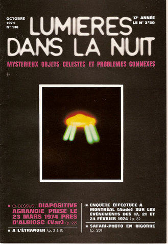

La couverture de LDLN ce mois-là, sur la photographie d'Albiosc

A Saint Gilles (Gard), une surveillante de collège est avertie par les élèves d'un
phénomène particulier dans le ciel. Sortant à l'extérieur de l'établissement, le témoin aperçoit 1 boule de couleur
argentée ainsi que 2 autres petites boules. Celles-ci semblent être reliées à la première par un fil. Le témoin
décide d'avertir son mari et perd de vue l'ensemble. Le lendemain, on lui rapportera que les 2 petites boules sont
remontées dans la plus importante avant de repartir à vive allure GEPAN : PAN classé C.
Robert Spencer Carr déclare : Il y a 5 ans j'ai entendu de
la plus haute autorité à Washington qu'avant Noël l'ensemble de la dissimulation sur les ovnis sera terminée. Il y
aura une admission publique que les ovnis étaient réels, et que pendant les 25 dernières années le gouvernement des
Etats-Unis et l'Air Force savaient qu'ils étaient pilotés par des êtres comme les humainsKottmeyer, M. S.: "Still Waiting: A List of Predictions from the 'UFO Culture'", The Anomalist, 1998.
Carl Higdon est
retrouvé dans un état de confusion mentale apparent à proximité de la Forêt Nationale de Medecine Bow (Wyoming). Il
raconte qu'il fut enlevé dans un objet cubique par un extraterrestre nommé Ausso.